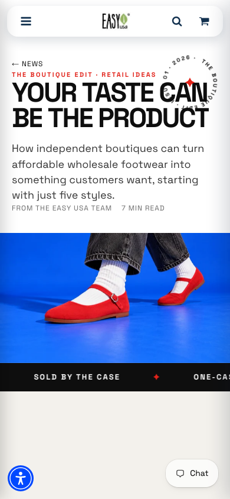

A different starting point for buyers
Easy USA’s catalog gives wholesale buyers the practical details: style numbers, case packs, and size runs. I wanted to show a newer boutique owner what those products could become in the context of their own store.
The article starts with a simple idea: a retailer’s selection, styling, and photography give a product its place. It shows how a small, considered assortment can work together, then gives the reader a way to start with one case.
My role
As Director of Ecommerce, I led the project from strategy and creative direction through content, design, implementation, SEO, and paid search. Claude Code and Codex were hands-on collaborators for coding and image work. I directed and reviewed the work throughout.
Making the idea visible
I built a custom Shopify editorial template with a magazine-cover opening, chapter spreads, pinned headings, and large outlined chapter numbers. The page moves between light and dark sections, with a reading-progress bar and small motion details that support the reading experience.
A draggable comparison shows the same shoe as a marketplace listing and as a styled product. Five linked product cards turn the article’s assortment advice into something readers can shop. Photo credits identify the actual products, and the page closes with The Boutique Edit collection.
AI imagery with product accuracy as a constraint
I directed studio-style images using real product photos as references: direct flash, below-the-waist styling, and no faces. I checked the results against the products for toe shape, straps, buckles, soles, and color. Images that misrepresented a shoe were rejected or held back.
The aim was to show a different way to merchandise the catalog while staying faithful to what a buyer would receive.
From prototype to reusable template
I started with a local prototype using the real copy and imagery, reviewed screenshots, and then moved the design into the live theme with backups before changes. The design evolved from a blog layout into a lookbook and then magazine-style chapter spreads.
I worked through scrolling, readability, and layout issues along the way, including a calmer experience for visitors who prefer reduced motion. The templates can be reused for future editorial content.


Connecting the creative work to discovery
Keyword research informed the search title, description, tags, and article structured data, targeting people starting boutiques or sourcing products for an online shop. The visible headline kept the editorial point of view.
I also audited paid-search terms, paused off-season ad groups, added negative keywords, and redirected budget toward boutique wholesale buyers without increasing the daily budget. A separate article-focused search campaign was planned for people researching how to start a boutique.
An email campaign was built and scheduled around the article. The article and collection also support outreach to independent boutiques.
What is delivered
The article is published, the editorial templates are reusable, and the paid-search changes are in place. Performance measurement is still early. Article visits, engagement, ad cost per click, and account sign-ins are the next measures to review; it is too soon to claim a sales or conversion lift.
Read the article ↗
Explore The Boutique Edit ↗
More about modernizing Easy USA →